class(obesity$Age) # produce: "numeric"[1] "numeric"Conocer el tipo de la variable edad
class(obesity$Age) # produce: "numeric"[1] "numeric"Conocer los valores de la variable edad
unique(obesity$Age)[1:20] # produce: [1] 21 23 27 22 29 24 26 41 30 52 20 19 31 39 17 25 55 38 18 15Histograma de la variable edad
ggplot(obesity, aes(x = Age)) +
geom_histogram(binwidth = 1)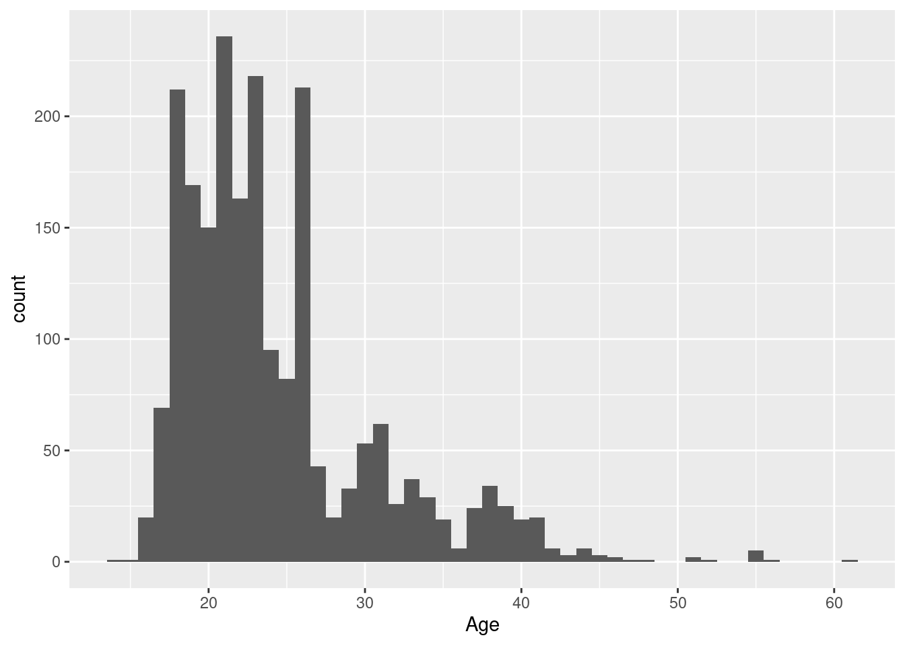
Gráfico de densidad de la variable edad
ggplot(obesity, aes(x = Age)) +
geom_density()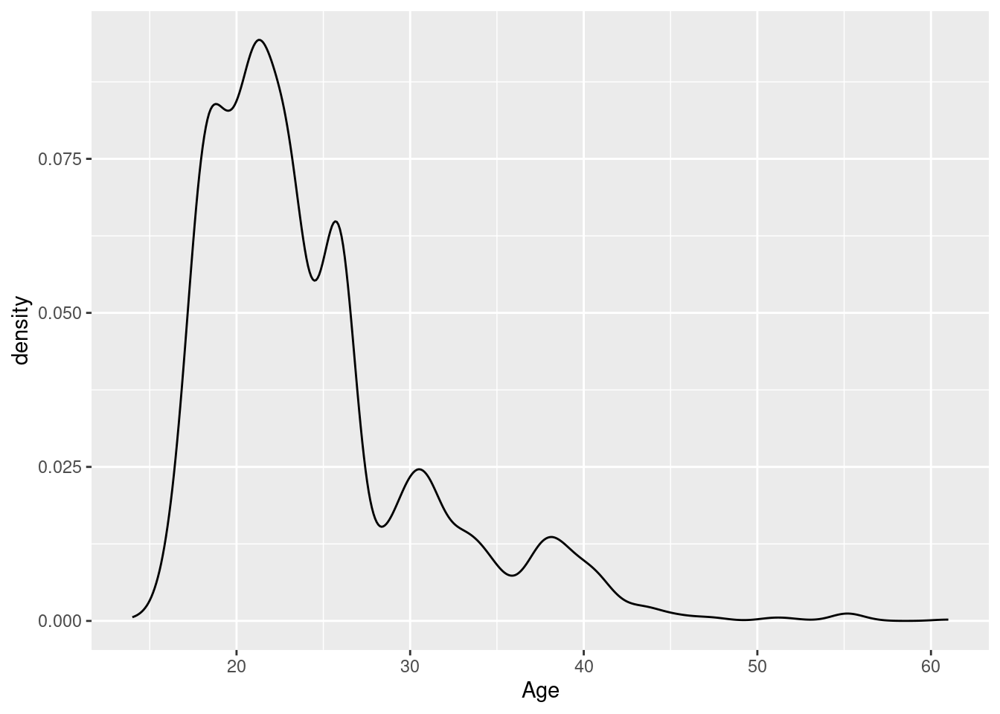
Conocer el tipo de la varaible de famialiares obesos
class(obesity$tiene_familiares_obesos) # produce: "factor"[1] "factor"Conocer los valores de la varaible de familiares obesos
unique(obesity$tiene_familiares_obesos) # produce: [1] si no
Levels: si no#[1] si no
#Levels: si noDiagrama de caja que relaciona familiares obesos con la edad, facetada por tipo de obesidad
ggplot(obesity, aes(x = tiene_familiares_obesos, y = Age)) +
geom_boxplot() +
facet_wrap(~tipo_obesidad)
Agrupar la tabla de obesidad por tipo de obesidad y familiares obesos, resumido por edad e índice de masa corporal
obesity_familiares <- obesity |>
group_by(tipo_obesidad, tiene_familiares_obesos) |>
summarise(
med_imc = median(imc, na.rm = TRUE),
med_age = median(Age, na.rm = TRUE),
.groups = "keep"
)
knitr::kable(obesity_familiares) # produce:| tipo_obesidad | tiene_familiares_obesos | med_imc | med_age |
|---|---|---|---|
| Desnutricion | si | 17.71161 | 19.64299 |
| Desnutricion | no | 17.34024 | 19.09135 |
| Peso normal | si | 22.48133 | 21.00000 |
| Peso normal | no | 22.03857 | 20.00000 |
| Sobrepeso | si | 27.27954 | 22.86978 |
| Sobrepeso | no | 26.57313 | 21.83706 |
| Obesidad grado 1 | si | 32.25961 | 23.00000 |
| Obesidad grado 1 | no | 31.22130 | 23.00000 |
| Obesidad grado 2 | si | 36.87853 | 25.99964 |
| Obesidad grado 2 | no | 35.00320 | 25.00000 |
| Obesidad grado 3 | si | 42.76710 | 22.81212 |
Diagrama de dispersión que relaciona el índice de masa corporal con la edad, facetado por tipo de obesidad y coloreado por familiares obesos.
ggplot(obesity_familiares, aes(x = med_imc, y = med_age)) +
geom_point(aes(color = tiene_familiares_obesos)) +
facet_wrap(~tipo_obesidad)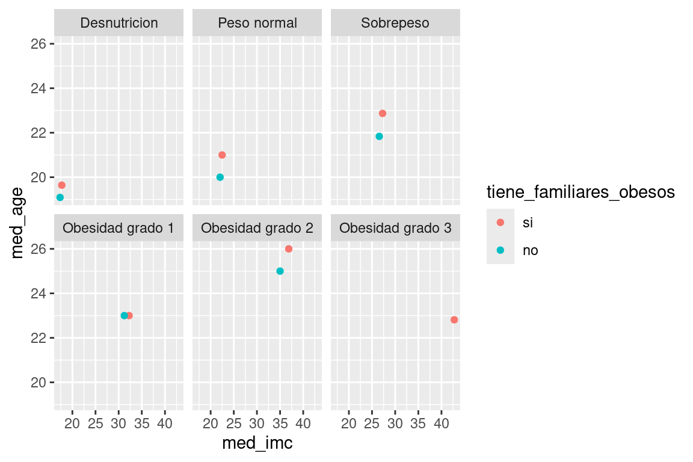
Agrupar la tabla obesidad por tipo de obesidad y resumir por los que si tienen familiares obesos.
obesity |>
group_by(tipo_obesidad) |>
summarise(
sum_familiares = sum(tiene_familiares_obesos == "si", na.rm = TRUE),
perc_familiares = mean(tiene_familiares_obesos == "si",
na.rm = TRUE) * 100,
med_age = median(Age, na.rm = TRUE),
.groups = "keep"
) |> knitr::kable()| tipo_obesidad | sum_familiares | perc_familiares | med_age |
|---|---|---|---|
| Desnutricion | 124 | 45.75646 | 19.22011 |
| Peso normal | 163 | 54.33333 | 21.00000 |
| Sobrepeso | 473 | 83.56890 | 22.69646 |
| Obesidad grado 1 | 361 | 98.09783 | 23.00000 |
| Obesidad grado 2 | 337 | 99.70414 | 25.99940 |
| Obesidad grado 3 | 268 | 100.00000 | 22.81212 |
Conocer el tipo de la variable de consumo de comida muy calórica
class(obesity$come_comida_muy_calorica) # produce: "factor"[1] "factor"Conocer los valores de la varaible consumo de comida muy calórica
unique(obesity$come_comida_muy_calorica) # produce: [1] no si[1] no si
Levels: si noDiagrama de caja que relaciona el consumo de comida muy calórica con edad, factada por tipo de obesidad
ggplot(obesity, aes(x = come_comida_muy_calorica, y = Age)) +
geom_boxplot() +
facet_wrap(~tipo_obesidad)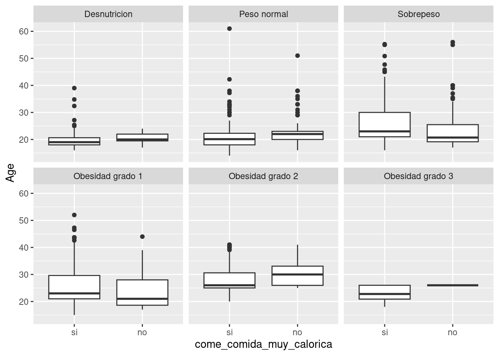
Agrupar la tabla obesidad por tipo de obesidad y consumo de comida muy calórica, resumida por índice de masa corporal y edad.
obesity_calorica <- obesity |>
group_by(tipo_obesidad, come_comida_muy_calorica) |>
summarise(
med_imc = median(imc, na.rm = TRUE),
med_age = median(Age, na.rm = TRUE),
.groups = "keep"
)
knitr::kable(obesity_calorica) # produce:| tipo_obesidad | come_comida_muy_calorica | med_imc | med_age |
|---|---|---|---|
| Desnutricion | si | 17.55407 | 19.00000 |
| Desnutricion | no | 17.53665 | 20.00000 |
| Peso normal | si | 22.31328 | 20.11270 |
| Peso normal | no | 22.00284 | 22.00000 |
| Sobrepeso | si | 26.73109 | 22.98800 |
| Sobrepeso | no | 27.95590 | 20.70768 |
| Obesidad grado 1 | si | 32.27382 | 23.00000 |
| Obesidad grado 1 | no | 30.97542 | 21.00000 |
| Obesidad grado 2 | si | 36.87853 | 25.99865 |
| Obesidad grado 2 | no | 36.13127 | 30.00000 |
| Obesidad grado 3 | si | 42.77525 | 22.77789 |
| Obesidad grado 3 | no | 40.64451 | 26.00000 |
Diagrama de dispersión que relaciona la edad con el índice de masa corporal, coloreado por consumo de comida muy calórica
ggplot(obesity_calorica, aes(x = med_age, y = med_imc)) +
geom_point(aes( color = come_comida_muy_calorica)) +
facet_wrap(~tipo_obesidad)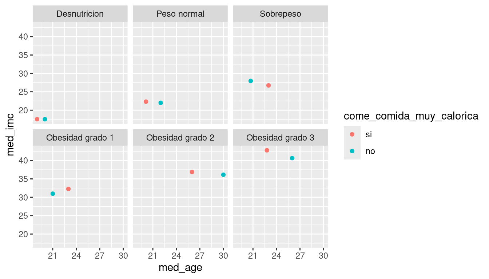
Agrupar la tabla obesidad por tipo de obesidad y resumir por los que sí comen comida muy calórica
obesity |>
group_by(tipo_obesidad) |>
summarise(
sum_muy_calorica = sum(come_comida_muy_calorica == "si",
na.rm = TRUE),
perc_muy_calorica = mean(come_comida_muy_calorica == "si",
na.rm = TRUE) * 100,
med_age = median(Age, na.rm = TRUE),
.groups = "keep"
) |>
knitr::kable()| tipo_obesidad | sum_muy_calorica | perc_muy_calorica | med_age |
|---|---|---|---|
| Desnutricion | 219 | 80.81181 | 19.22011 |
| Peso normal | 222 | 74.00000 | 21.00000 |
| Sobrepeso | 473 | 83.56890 | 22.69646 |
| Obesidad grado 1 | 354 | 96.19565 | 23.00000 |
| Obesidad grado 2 | 331 | 97.92899 | 25.99940 |
| Obesidad grado 3 | 267 | 99.62687 | 22.81212 |
Conocer el tipo de la variable consumo de vegetales
class(obesity$come_vegetales) # produce: "numeric"[1] "numeric"Conocer los valores de la varaible consumo de vegetales
unique(obesity$come_vegetales)[1:20] # produce: [1] 2.000000 3.000000 1.000000 2.450218 2.880161 2.008760 2.596579 2.591439
[9] 2.392665 1.123939 2.027574 2.658112 2.886260 2.714447 2.750715 1.492500
[17] 2.205439 2.059138 2.310423 2.823179Diagrama de dispersión que relaciona consumo de vegetales y edad
ggplot(obesity, aes(x = come_vegetales, y = Age)) +
geom_point(aes(color = tipo_obesidad)) +
facet_wrap(~tipo_obesidad)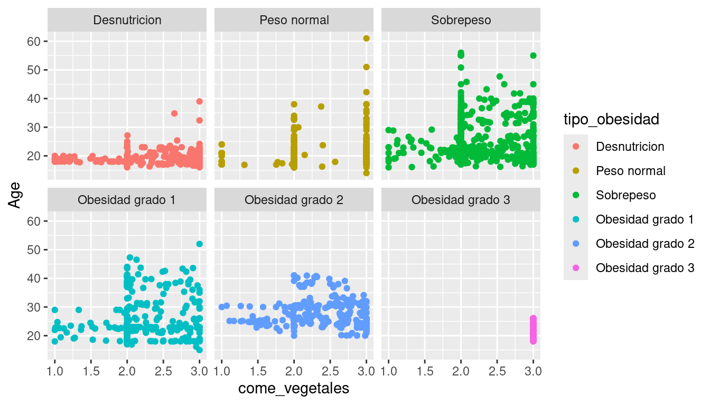
Agrupar la tabla de obesidad por tipo de obesidad , resumida por consumo de vegetales y edad
obesity_vegetales <- obesity |>
group_by(tipo_obesidad) |>
summarise(
med_vegetales = median(come_vegetales, na.rm = TRUE),
avg_vegetales = mean(come_vegetales, na.rm = TRUE),
med_age = median(Age, na.rm = TRUE),
.groups = "keep"
)
knitr::kable(obesity_vegetales)| tipo_obesidad | med_vegetales | avg_vegetales | med_age |
|---|---|---|---|
| Desnutricion | 2.703436 | 2.472868 | 19.22011 |
| Peso normal | 2.000000 | 2.331947 | 21.00000 |
| Sobrepeso | 2.000000 | 2.262113 | 22.69646 |
| Obesidad grado 1 | 2.000000 | 2.207256 | 23.00000 |
| Obesidad grado 2 | 2.611534 | 2.485925 | 25.99940 |
| Obesidad grado 3 | 3.000000 | 3.000000 | 22.81212 |
Diagrama de dispersión que relaciona el consumo de vegetales con edad, coloreado y facetado por tipo de obesidad
ggplot(obesity_vegetales, aes(x = med_vegetales, y = med_age)) +
geom_point(aes(color = tipo_obesidad)) +
facet_wrap(~tipo_obesidad)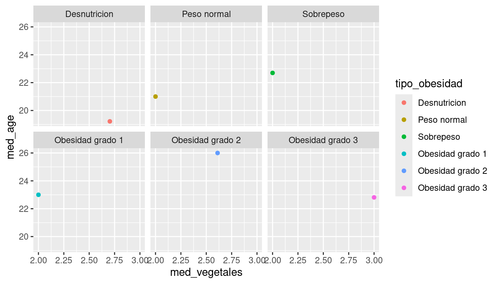
Agrupar por tipo de obesidad y resumir por edad y los que comen siempre vegetales
obesity |>
group_by(tipo_obesidad) |>
summarise(
sum_vegetales_igual3 = sum(come_vegetales == 3, na.rm = TRUE),
perc_vegetales_igual3 = mean(come_vegetales == 3,
na.rm = TRUE) * 100,
med_age = median(Age, na.rm = TRUE),
.groups = "keep"
) |>
knitr::kable()| tipo_obesidad | sum_vegetales_igual3 | perc_vegetales_igual3 | med_age |
|---|---|---|---|
| Desnutricion | 81 | 29.889299 | 19.22011 |
| Peso normal | 117 | 39.000000 | 21.00000 |
| Sobrepeso | 75 | 13.250883 | 22.69646 |
| Obesidad grado 1 | 28 | 7.608696 | 23.00000 |
| Obesidad grado 2 | 83 | 24.556213 | 25.99940 |
| Obesidad grado 3 | 268 | 100.000000 | 22.81212 |
Agrupar por tipo de obesidad y resumir por edad y los que nunca comen vegetales
obesity |>
group_by(tipo_obesidad) |>
summarise(
sum_vegetales_igual1 = sum(come_vegetales == 1, na.rm = TRUE),
perc_vegetales_igual1 = mean(come_vegetales == 1,
na.rm = TRUE) * 100,
med_age = median(Age, na.rm = TRUE),
.groups = "keep"
) |>
knitr::kable()| tipo_obesidad | sum_vegetales_igual1 | perc_vegetales_igual1 | med_age |
|---|---|---|---|
| Desnutricion | 4 | 1.4760148 | 19.22011 |
| Peso normal | 18 | 6.0000000 | 21.00000 |
| Sobrepeso | 7 | 1.2367491 | 22.69646 |
| Obesidad grado 1 | 3 | 0.8152174 | 23.00000 |
| Obesidad grado 2 | 1 | 0.2958580 | 25.99940 |
| Obesidad grado 3 | 0 | 0.0000000 | 22.81212 |
Conocer el tipo de la varaible de comidas principales
class(obesity$comidas_principales) # produce: "numeric"[1] "numeric"Conocer los valores de la varaible comidas principales
unique(obesity$comidas_principales)[1:20] # produce: [1] 3.000000 1.000000 4.000000 3.289260 3.995147 1.726260 2.581015 1.600812
[9] 1.737620 1.105480 2.084600 1.894384 2.857787 3.765526 3.285167 3.691226
[17] 3.156153 1.079760 3.559841 3.891994Diagrama de dispersión que relaciona la edad con las comidas principales coloreado, y facetado por tipo de obesidad
ggplot(obesity, aes(x = Age, y = comidas_principales)) +
geom_point(aes(color = tipo_obesidad)) +
facet_wrap(~tipo_obesidad)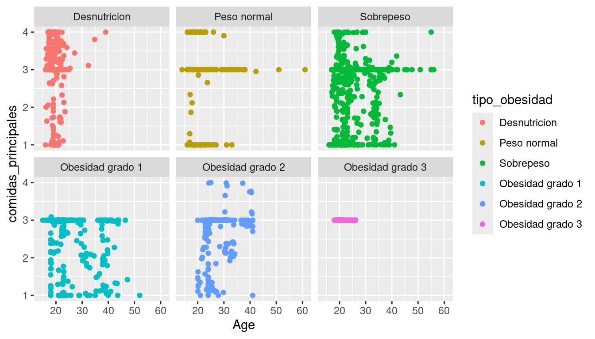
Agrupar la tabla obesidad por tipo de obesidad y resumir por número de comidas y edad
obesity_comidas <- obesity |>
group_by(tipo_obesidad) |>
summarise(
med_comidas = median(comidas_principales, na.rm = TRUE),
avg_comidas = mean(comidas_principales, na.rm = TRUE),
med_age = median(Age, na.rm = TRUE),
n_tipo = n(),
.groups = "keep"
)
knitr::kable(obesity_comidas)| tipo_obesidad | med_comidas | avg_comidas | med_age | n_tipo |
|---|---|---|---|---|
| Desnutricion | 3 | 2.907583 | 19.22011 | 271 |
| Peso normal | 3 | 2.726861 | 21.00000 | 300 |
| Sobrepeso | 3 | 2.497071 | 22.69646 | 566 |
| Obesidad grado 1 | 3 | 2.454136 | 23.00000 | 368 |
| Obesidad grado 2 | 3 | 2.789596 | 25.99940 | 338 |
| Obesidad grado 3 | 3 | 3.000000 | 22.81212 | 268 |
Diagrama de dispersión que relaciona la edad con el número de comidas coloreado y facetado por tipo de obesidad
ggplot(obesity_comidas, aes(x = med_age, y = avg_comidas)) +
geom_point(aes(color = tipo_obesidad)) +
facet_wrap(~tipo_obesidad)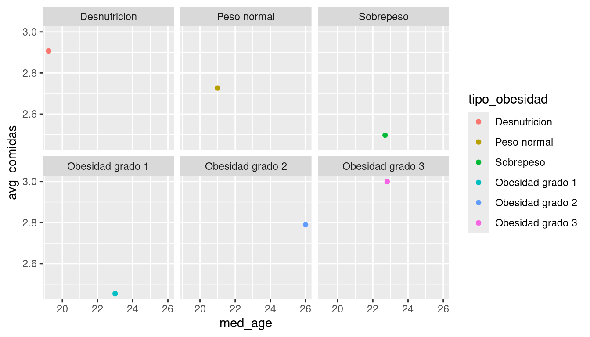
Agrupar la tabla de obesidad por tipo de obesidad y resumir por edad y los que comen menos de 3 veces al días
obesity |>
group_by(tipo_obesidad) |>
summarise(
sum_comidas_menos3 = mean(comidas_principales < 3, na.rm = TRUE),
perc_comidas_menos3 = mean(comidas_principales < 3
, na.rm = TRUE) * 100,
med_age = median(Age, na.rm = TRUE),
.groups = "keep"
) |>
knitr::kable()| tipo_obesidad | sum_comidas_menos3 | perc_comidas_menos3 | med_age |
|---|---|---|---|
| Desnutricion | 0.2472325 | 24.72325 | 19.22011 |
| Peso normal | 0.2033333 | 20.33333 | 21.00000 |
| Sobrepeso | 0.4805654 | 48.05654 | 22.69646 |
| Obesidad grado 1 | 0.4864130 | 48.64130 | 23.00000 |
| Obesidad grado 2 | 0.2988166 | 29.88166 | 25.99940 |
| Obesidad grado 3 | 0.0000000 | 0.00000 | 22.81212 |
Agrupar la tabla de obesidad por tipo de obesidad y resumir por edad y los que comen menos de 2 veces al días
obesity |>
group_by(tipo_obesidad) |>
summarise(
sum_comidas_menos2 = mean(comidas_principales <= 2, na.rm = TRUE),
perc_comidas_menos2 = mean(comidas_principales <= 2
, na.rm = TRUE) * 100,
med_age = median(Age, na.rm = TRUE),
.groups = "keep"
) |>
knitr::kable()| tipo_obesidad | sum_comidas_menos2 | perc_comidas_menos2 | med_age |
|---|---|---|---|
| Desnutricion | 0.1808118 | 18.081181 | 19.22011 |
| Peso normal | 0.1866667 | 18.666667 | 21.00000 |
| Sobrepeso | 0.2809187 | 28.091873 | 22.69646 |
| Obesidad grado 1 | 0.2690217 | 26.902174 | 23.00000 |
| Obesidad grado 2 | 0.0946746 | 9.467456 | 25.99940 |
| Obesidad grado 3 | 0.0000000 | 0.000000 | 22.81212 |
Agrupar la tabla de obesidad por tipo de obesidad y resumir por edad y los que comen mas de 3 veces al días
obesity |>
group_by(tipo_obesidad) |>
summarise(
sum_comidas_mas3 = mean(comidas_principales > 3, na.rm = TRUE),
perc_comidas_mas3 = mean(comidas_principales > 3
, na.rm = TRUE) * 100,
med_age = median(Age, na.rm = TRUE),
.groups = "keep"
) |>
knitr::kable()| tipo_obesidad | sum_comidas_mas3 | perc_comidas_mas3 | med_age |
|---|---|---|---|
| Desnutricion | 0.4022140 | 40.2214022 | 19.22011 |
| Peso normal | 0.1033333 | 10.3333333 | 21.00000 |
| Sobrepeso | 0.1289753 | 12.8975265 | 22.69646 |
| Obesidad grado 1 | 0.0081522 | 0.8152174 | 23.00000 |
| Obesidad grado 2 | 0.0355030 | 3.5502959 | 25.99940 |
| Obesidad grado 3 | 0.0000000 | 0.0000000 | 22.81212 |
Agrupar la tabla de obesidad por tipo de obesidad y resumir por edad y los que comen mas de 4 veces al días
obesity |>
group_by(tipo_obesidad) |>
summarise(
sum_comidas_mas4 = mean(comidas_principales >= 4, na.rm = TRUE),
perc_comidas_mas4 = mean(comidas_principales >= 4
, na.rm = TRUE) * 100,
med_age = median(Age, na.rm = TRUE),
.groups = "keep"
) |>
knitr::kable()| tipo_obesidad | sum_comidas_mas4 | perc_comidas_mas4 | med_age |
|---|---|---|---|
| Desnutricion | 0.1033210 | 10.332103 | 19.22011 |
| Peso normal | 0.1000000 | 10.000000 | 21.00000 |
| Sobrepeso | 0.0176678 | 1.766784 | 22.69646 |
| Obesidad grado 1 | 0.0000000 | 0.000000 | 23.00000 |
| Obesidad grado 2 | 0.0029586 | 0.295858 | 25.99940 |
| Obesidad grado 3 | 0.0000000 | 0.000000 | 22.81212 |
Conocer el tipo de la variable consumo de refrigerios
class(obesity$come_refrigerios) # produce: "factor"[1] "factor"Conocer los valores de la varaible consumo de refrigerio
unique(obesity$come_refrigerios) # produce : [1] ocasional frecuente siempre nunca
Levels: ocasional frecuente nunca siempre# [1] ocasional frecuente siempre nunca Diagrama de caja que relaciona el consumo de refrigerios con la edad, coloreado por consumo de refrigerios y facetado por tipo de obesidad
ggplot(obesity, aes(x = come_refrigerios, y = Age)) +
geom_boxplot(aes(color = come_refrigerios)) +
facet_wrap(~tipo_obesidad)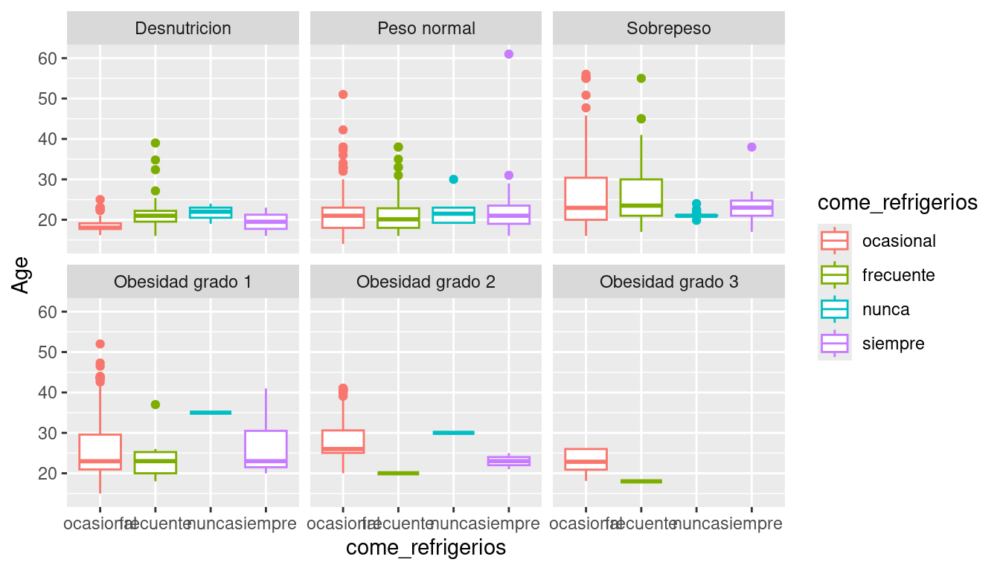
Agrupar la tabla obesidad por consumo de refrigerios y resumir por índice de masa corporal y edad
obesity_refrigerios <- obesity |>
group_by(come_refrigerios) |>
summarise(
med_imc = median(imc, na.rm = TRUE),
med_age = median(Age, na.rm = TRUE),
.groups = "keep"
)
knitr::kable(obesity_refrigerios)| come_refrigerios | med_imc | med_age |
|---|---|---|
| ocasional | 31.22050 | 23 |
| frecuente | 18.85854 | 21 |
| nunca | 26.41363 | 21 |
| siempre | 23.78121 | 21 |
Diagrama de dispersión que relaciona la edad con el índice de masa corporal, coloreado por consumo de refrigerios
ggplot(obesity_refrigerios, aes(x = med_age, y = med_imc)) +
geom_point(aes(color = come_refrigerios))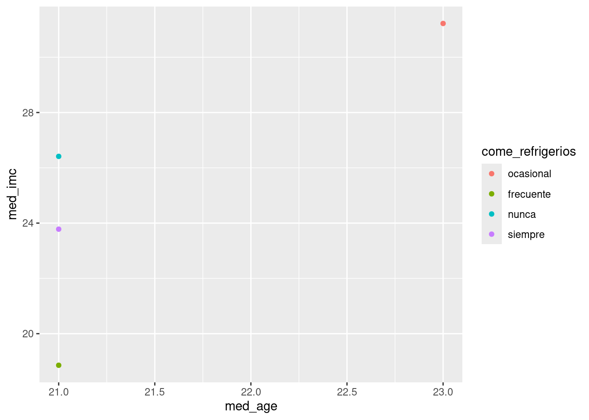
Agrupar tabla por tipo de obesidad y resumir por los que nunca comen refrigerios y su edad
obesity |>
group_by(tipo_obesidad) |>
summarise(
sum_numca = sum(come_refrigerios == "nunca", na.rm = TRUE),
perc_nunca = mean(come_refrigerios == "nunca",
na.rm = TRUE) * 100,
med_age = median(Age, na.rm = TRUE),
.groups = "keep"
) |>
knitr::kable()| tipo_obesidad | sum_numca | perc_nunca | med_age |
|---|---|---|---|
| Desnutricion | 3 | 1.1070111 | 19.22011 |
| Peso normal | 10 | 3.3333333 | 21.00000 |
| Sobrepeso | 36 | 6.3604240 | 22.69646 |
| Obesidad grado 1 | 1 | 0.2717391 | 23.00000 |
| Obesidad grado 2 | 1 | 0.2958580 | 25.99940 |
| Obesidad grado 3 | 0 | 0.0000000 | 22.81212 |
Agrupar tabla por tipo de obesidad y resumir por los que siempre comen refrigerios y su edad
obesity |>
group_by(tipo_obesidad) |>
summarise(
sum_siempre = sum(come_refrigerios == "siempre", na.rm = TRUE),
perc_siempre = mean(come_refrigerios == "siempre",
na.rm = TRUE) * 100,
med_age = median(Age, na.rm = TRUE),
.groups = "keep"
) |>
knitr::kable()| tipo_obesidad | sum_siempre | perc_siempre | med_age |
|---|---|---|---|
| Desnutricion | 2 | 0.7380074 | 19.22011 |
| Peso normal | 35 | 11.6666667 | 21.00000 |
| Sobrepeso | 8 | 1.4134276 | 22.69646 |
| Obesidad grado 1 | 6 | 1.6304348 | 23.00000 |
| Obesidad grado 2 | 2 | 0.5917160 | 25.99940 |
| Obesidad grado 3 | 0 | 0.0000000 | 22.81212 |
Conocer el tipo de la variable de hábito de fumar
class(obesity$fuma) # produce: "factor"[1] "factor"Conocer los valores de la variable hábito de fumar
unique(obesity$fuma) # produce: [1] no si[1] no si
Levels: si noDiagrama de caja que relaciona el hábito de fumar con la edad, facetado por tipo de obesidad
ggplot(obesity, aes(x = fuma, y = Age)) +
geom_boxplot() +
facet_wrap(~tipo_obesidad)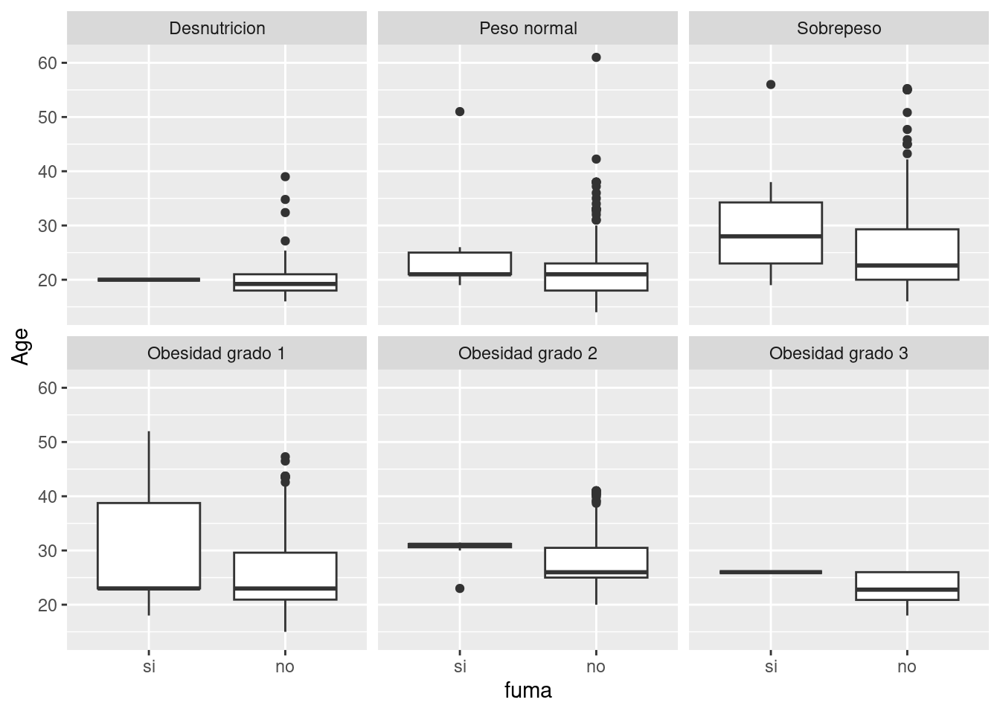
Agrupar la tabla obesidad por tipo de obesidad y resumir por los que si fuman
obesity_fuma <- obesity |>
group_by(tipo_obesidad) |>
summarise(
fumadores = sum(fuma == "si", na.rm = TRUE),
prop_fumadores = mean(fuma == "si", na.rm = TRUE) * 100,
#round(mean(SMOKE == "yes") * 100, 1) # formato bonito
med_age = median(Age, na.rm = TRUE),
.groups = "keep"
)
knitr::kable(obesity_fuma)| tipo_obesidad | fumadores | prop_fumadores | med_age |
|---|---|---|---|
| Desnutricion | 1 | 0.3690037 | 19.22011 |
| Peso normal | 13 | 4.3333333 | 21.00000 |
| Sobrepeso | 8 | 1.4134276 | 22.69646 |
| Obesidad grado 1 | 6 | 1.6304348 | 23.00000 |
| Obesidad grado 2 | 15 | 4.4378698 | 25.99940 |
| Obesidad grado 3 | 1 | 0.3731343 | 22.81212 |
Diagrama de dispersión que relaciona la edad con los fumadores, coloreado por tipo de obesidad
ggplot(obesity_fuma, aes(x = med_age, y = prop_fumadores)) +
geom_point(aes(color = tipo_obesidad))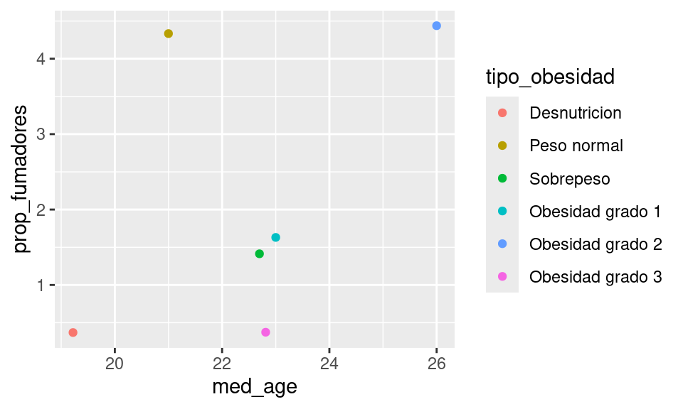
Conocer el tipo de la variable de consumo de agua
class(obesity$agua_diaria) # produce: "numeric"[1] "numeric"Conocer el tipo de valores de la variable de consumo de agua
unique(obesity$agua_diaria)[1:20] # produce: [1] 2.000000 3.000000 1.000000 1.152736 1.115967 2.704507 2.184707 2.406541
[9] 2.984323 2.444125 2.654702 2.825629 2.847264 2.884033 2.147746 2.815293
[17] 2.593459 1.031354 2.651258 1.792022Diagrama de dispersión que relaciona la edad con el consumo de agua, facetado por tipo de obesidad
ggplot(obesity, aes(x = Age, y = agua_diaria)) +
geom_point() +
facet_wrap(~tipo_obesidad)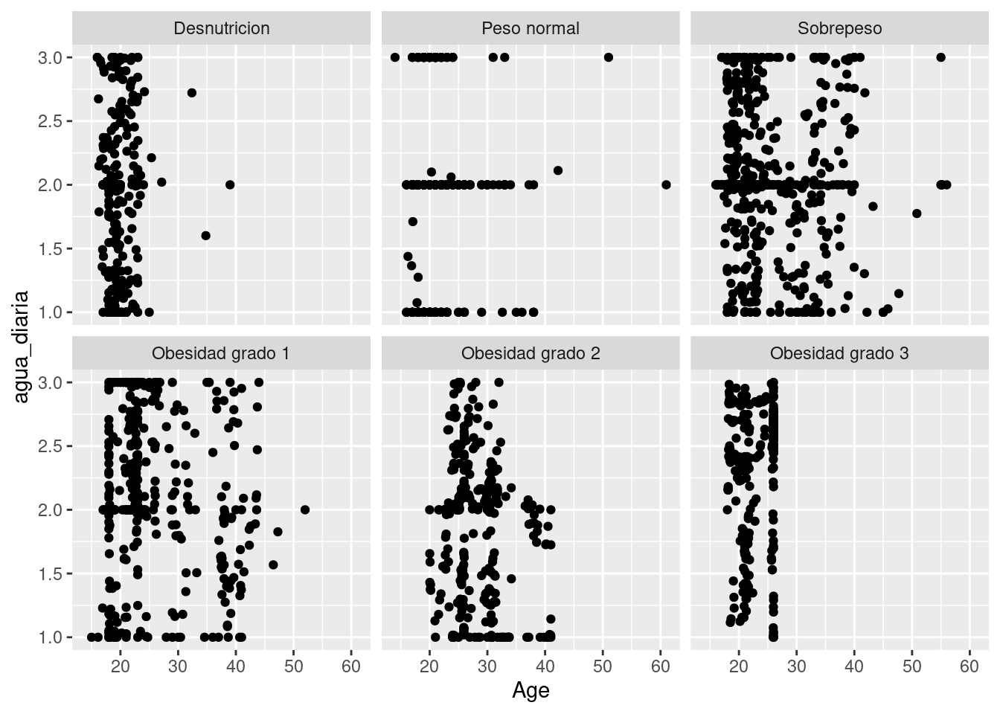
Agrupar la tabla obesidad por tipo de obesidad y resumir por edad y consumo de agua
obesity_agua <- obesity |>
group_by(tipo_obesidad) |>
summarise(
med_agua = median(agua_diaria, na.rm = TRUE),
med_age = median(Age, na.rm = TRUE),
.groups = "keep"
)
obesity_agua# A tibble: 6 × 3
# Groups: tipo_obesidad [6]
tipo_obesidad med_agua med_age
<fct> <dbl> <dbl>
1 Desnutricion 2 19.2
2 Peso normal 2 21
3 Sobrepeso 2 22.7
4 Obesidad grado 1 2.02 23
5 Obesidad grado 2 2 26.0
6 Obesidad grado 3 2.50 22.8Diagrama de dispersión que relaciona la edad con el consumo de agua, coloreado por tipo de obesidad
ggplot(obesity_agua, aes(x = med_age, y = med_agua)) +
geom_point(aes(color = tipo_obesidad))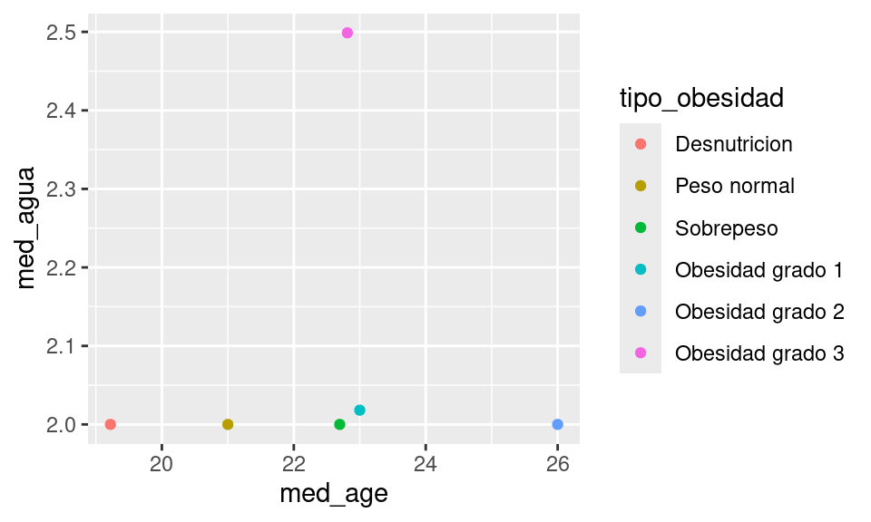
Agrupar la tabla obesidad por tipo de obesidad y resumir por quienes consumen más de 2 litros de agua
obesity |>
group_by(tipo_obesidad) |>
summarise(
sum_agua2 = sum(agua_diaria > 2, na.rm = TRUE),
prop_agua2 = mean(agua_diaria > 2, na.rm = TRUE) * 100,
med_age = median(Age, na.rm = TRUE),
.groups = "keep"
) |>
knitr::kable()| tipo_obesidad | sum_agua2 | prop_agua2 | med_age |
|---|---|---|---|
| Desnutricion | 90 | 33.21033 | 19.22011 |
| Peso normal | 43 | 14.33333 | 21.00000 |
| Sobrepeso | 224 | 39.57597 | 22.69646 |
| Obesidad grado 1 | 186 | 50.54348 | 23.00000 |
| Obesidad grado 2 | 160 | 47.33728 | 25.99940 |
| Obesidad grado 3 | 191 | 71.26866 | 22.81212 |
Conocer el tipo de la variable conusmo de bebidas calóricas
class(obesity$toma_bebidas_calóricas) # produce: "factor"[1] "factor"Conocer los valores de la variable consumo de bebidas calóricas
unique(obesity$toma_bebidas_calóricas) # produce: [1] no si[1] no si
Levels: no siDiagrama de caja que relaciona el consumo de bebidas calóricas conla edad, facetado por tipo de obesidad
ggplot(obesity, aes(x = toma_bebidas_calóricas, y = Age)) +
geom_boxplot() +
facet_wrap(~tipo_obesidad)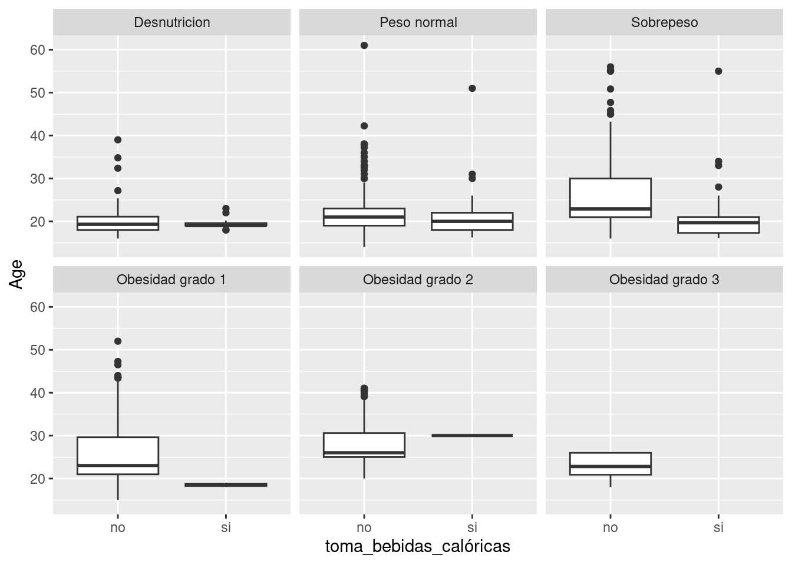
Agrupar la tabla obesidad por consumo de bebidas calóricas y resumida por índice de masa corporal y edad
obesity |>
group_by(toma_bebidas_calóricas) |>
summarise(
med_imc = median(imc, na.rm = TRUE),
med_age = median(Age, na.rm = TRUE),
.groups = "keep"
) |>
knitr::kable()| toma_bebidas_calóricas | med_imc | med_age |
|---|---|---|
| no | 29.30365 | 22.92701 |
| si | 24.19190 | 19.04222 |
Agrupar la tabla obesidad por tipo de obesidad y resumir por conusmo de bebidas calóricas
obesity_caloricas <- obesity |>
group_by(tipo_obesidad) |>
summarise(
sum_caloricas = sum(toma_bebidas_calóricas == "si", na.rm = TRUE),
prop_caloricas = mean(toma_bebidas_calóricas == "si",
na.rm = TRUE) * 100,
med_age = median(Age, na.rm = TRUE),
.groups = "keep"
)
knitr::kable(obesity_caloricas) # produce:| tipo_obesidad | sum_caloricas | prop_caloricas | med_age |
|---|---|---|---|
| Desnutricion | 22 | 8.1180812 | 19.22011 |
| Peso normal | 37 | 12.3333333 | 21.00000 |
| Sobrepeso | 34 | 6.0070671 | 22.69646 |
| Obesidad grado 1 | 2 | 0.5434783 | 23.00000 |
| Obesidad grado 2 | 1 | 0.2958580 | 25.99940 |
| Obesidad grado 3 | 0 | 0.0000000 | 22.81212 |
Diagrama de dispersión que relaciona la edad con el porcentaje de personas que sí toman bebidas calóricas
ggplot(obesity_caloricas, aes(x = med_age, y = prop_caloricas)) +
geom_point(aes(color = tipo_obesidad))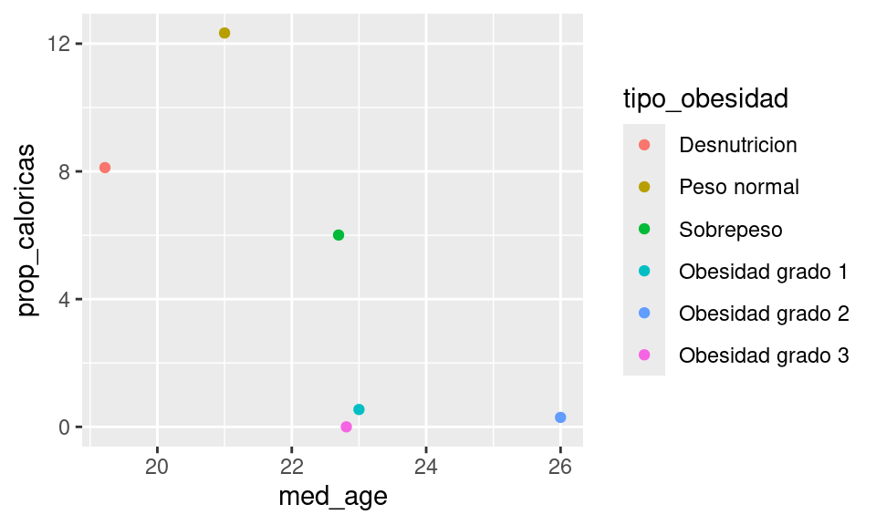
Conocer el tipo de la variable de actividad física
class(obesity$actividad_fisica) # produce: "numeric"[1] "numeric"Conocer los valores de la variable actividad física
unique(obesity$actividad_fisica)[1:20] # produce: [1] 0.000000 3.000000 2.000000 1.000000 0.319156 1.541072 1.978631 0.100320
[9] 1.586525 1.399183 1.680844 2.206738 1.318170 0.902095 0.600817 0.119643
[17] 0.345684 1.679935 2.539762 0.196152Diagrama de dispersión que relaciona el edad con la actividad física, coloreado y facetado por tipo de obesidad
ggplot(obesity, aes(x = Age, y = actividad_fisica)) +
geom_point(aes(color = tipo_obesidad)) +
facet_wrap(~tipo_obesidad)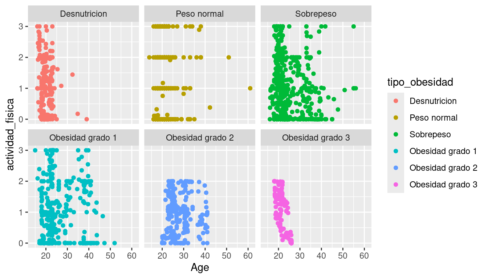
Agrupar la tabla obesidad por tipo de obesidad y resumir por actividad física y edad
obesity |>
group_by(tipo_obesidad) |>
summarise(
med_actividad = median(actividad_fisica, na.rm = TRUE),
avg_actividad = mean(actividad_fisica, na.rm = TRUE),
med_age = median(Age, na.rm = TRUE),
.groups = "keep"
) |>
knitr::kable()| tipo_obesidad | med_actividad | avg_actividad | med_age |
|---|---|---|---|
| Desnutricion | 1.3519960 | 1.2521007 | 19.22011 |
| Peso normal | 1.0000000 | 1.2197475 | 21.00000 |
| Sobrepeso | 1.0000000 | 1.0089065 | 22.69646 |
| Obesidad grado 1 | 1.0000000 | 1.0054381 | 23.00000 |
| Obesidad grado 2 | 0.8590575 | 0.8256418 | 25.99940 |
| Obesidad grado 3 | 0.6221015 | 0.7738271 | 22.81212 |
Agrupar la tabla obesidad por tipo de obesidad y resumir por actividad física y edad
obesity |>
group_by(tipo_obesidad) |>
summarise(
sum_actividad_equal0 = sum(actividad_fisica == 0, na.rm = TRUE),
perc_actividad_equal0 = mean(actividad_fisica == 0,
na.rm = TRUE) * 100,
med_age = median(Age, na.rm = TRUE),
.groups = "keep"
) |>
knitr::kable()| tipo_obesidad | sum_actividad_equal0 | perc_actividad_equal0 | med_age |
|---|---|---|---|
| Desnutricion | 35 | 12.915129 | 19.22011 |
| Peso normal | 81 | 27.000000 | 21.00000 |
| Sobrepeso | 99 | 17.491166 | 22.69646 |
| Obesidad grado 1 | 80 | 21.739130 | 23.00000 |
| Obesidad grado 2 | 33 | 9.763314 | 25.99940 |
| Obesidad grado 3 | 83 | 30.970149 | 22.81212 |
Conocer el tipo de la varaible de uso de tecnología
class(obesity$uso_tecnologia) # produce: "numeric"[1] "numeric"Conocer los valores de la variable tecnología
unique(obesity$uso_tecnologia)[1:20] # produce: [1] 1.000000 0.000000 2.000000 0.294990 0.838957 0.479221 0.625350 0.265790
[9] 0.555468 0.928972 1.340107 0.589980 1.374650 1.283673 0.062488 0.997400
[17] 0.738269 0.860497 0.478676 0.555967Diagrama de dispersión que relaciona la edad con el uso detecnología , coloreado y facetado por el tipo de obesidad
ggplot(obesity, aes(x = Age, y = uso_tecnologia)) +
geom_point(aes(color = tipo_obesidad)) +
facet_wrap(~tipo_obesidad)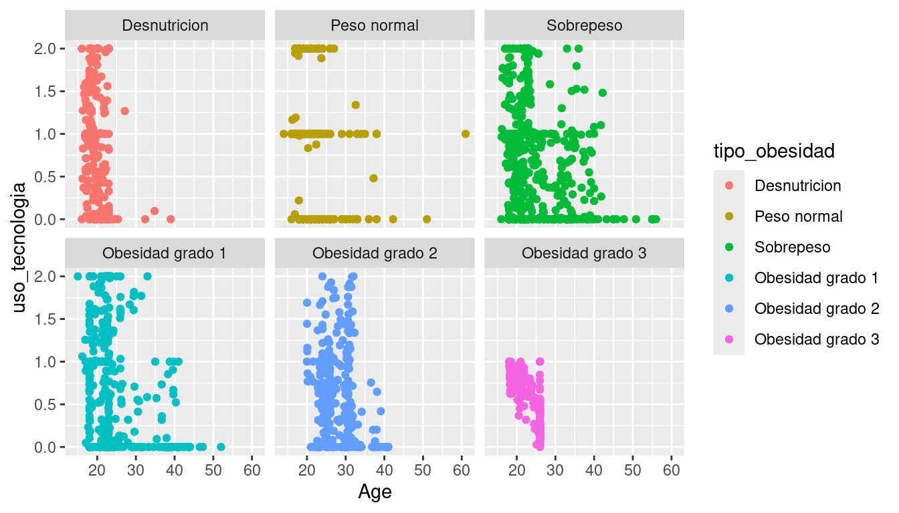
Agrupar la tabla obesidad por tipo de obesidad y resumido por la variable uso de tecnología y edad
obesity_tecnologia <- obesity |>
group_by(tipo_obesidad) |>
summarise(
med_tecnologia = median(uso_tecnologia, na.rm = TRUE),
avg_tecnologia = mean(uso_tecnologia, na.rm = TRUE),
med_age = median(Age, ne.rm = TRUE),
.groups= "keep"
)
knitr::kable(obesity_tecnologia)| tipo_obesidad | med_tecnologia | avg_tecnologia | med_age |
|---|---|---|---|
| Desnutricion | 1.0000000 | 0.8458944 | 19.22011 |
| Peso normal | 1.0000000 | 0.6895314 | 21.00000 |
| Sobrepeso | 0.5532850 | 0.6476678 | 22.69646 |
| Obesidad grado 1 | 0.5134800 | 0.6498986 | 23.00000 |
| Obesidad grado 2 | 0.4760430 | 0.5617050 | 25.99940 |
| Obesidad grado 3 | 0.6492885 | 0.5860419 | 22.81212 |
Diagrama de dispersión que relaciona la edad con el uso de tecnología y coloreado por tipo de obesidad
ggplot(obesity_tecnologia, aes(x = med_age, y = avg_tecnologia)) +
geom_point(aes(color = tipo_obesidad))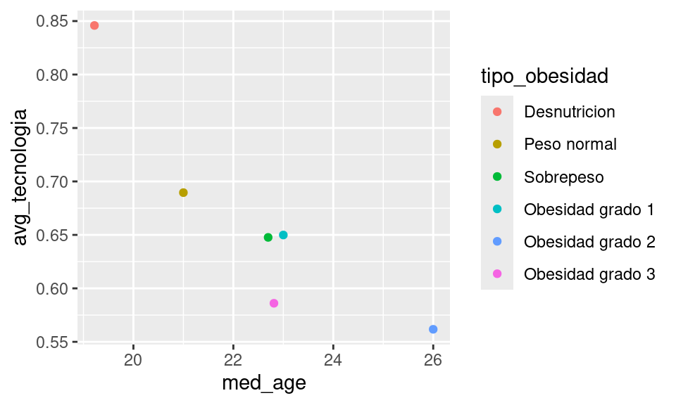
Conocer el tipo de la variable de consumo de alcohol
class(obesity$consume_alcohol) # produce: "factor"[1] "factor"Conocer los valores de la variable de consumo de alcohol
unique(obesity$consume_alcohol) # produce: [1] nunca ocasional frecuente siempre
Levels: nunca ocasional frecuente siempre# [1] nunca ocasional frecuente siempre Diagrama de caja que relaciona el consumo de alcohol con la edad, facetado por tipo de obesidad
ggplot(obesity, aes(x = consume_alcohol, y = Age)) +
geom_boxplot() +
facet_wrap(~tipo_obesidad)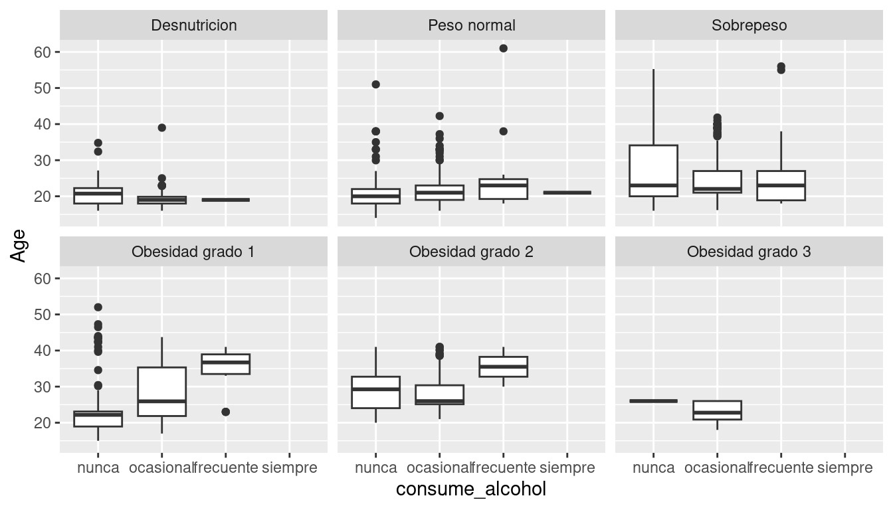
Agrupar la tabla obesidad por consumo de alcohol y resumir por índice de masa corporal y edad
obesity_alcohol <- obesity |>
group_by(consume_alcohol) |>
summarise(
med_imc = median(imc, na.rm = TRUE),
avg_imc = mean(imc, na.rm = TRUE),
med_age = median(Age, na.rm = TRUE),
.groups = "keep"
)
knitr::kable(obesity_alcohol) | consume_alcohol | med_imc | avg_imc | med_age |
|---|---|---|---|
| nunca | 27.97260 | 27.06414 | 22 |
| ocasional | 30.92375 | 31.04345 | 23 |
| frecuente | 26.92074 | 26.98115 | 24 |
| siempre | 22.49135 | 22.49135 | 21 |
Diagrama de dispersión que relaciona la edad con el índice de masacorporal, coloreado y formado por consumo de alcohol
ggplot(obesity_alcohol, aes(x = med_age, y = med_imc)) +
geom_point(aes(color = consume_alcohol, shape = consume_alcohol))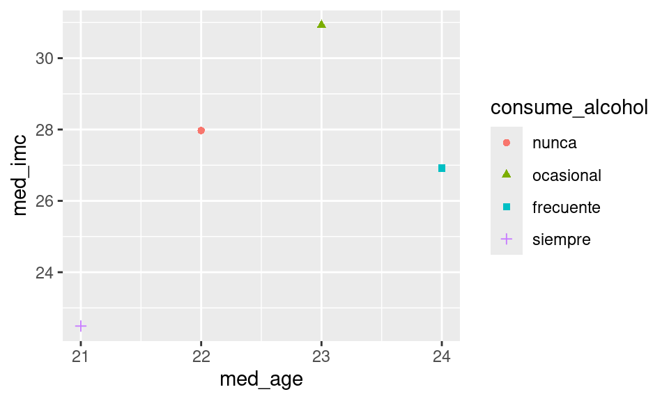
Conocer el tipo de la variable medio de transporte
class(obesity$medio_transporte) # produce: "factor"[1] "factor"Conocer los valores de la variable medio de transporte
unique(obesity$medio_transporte) # produce:[1] transporte_publico camina auto moto
[5] bicicleta
Levels: transporte_publico auto moto camina bicicleta#[1] transporte_publico camina auto Diagrama de caja que relaciona la variable de medio transporte con con la edad y facetado por tipo de obesidad
ggplot(obesity, aes(x = medio_transporte, y = Age)) +
geom_boxplot() +
facet_wrap(~tipo_obesidad)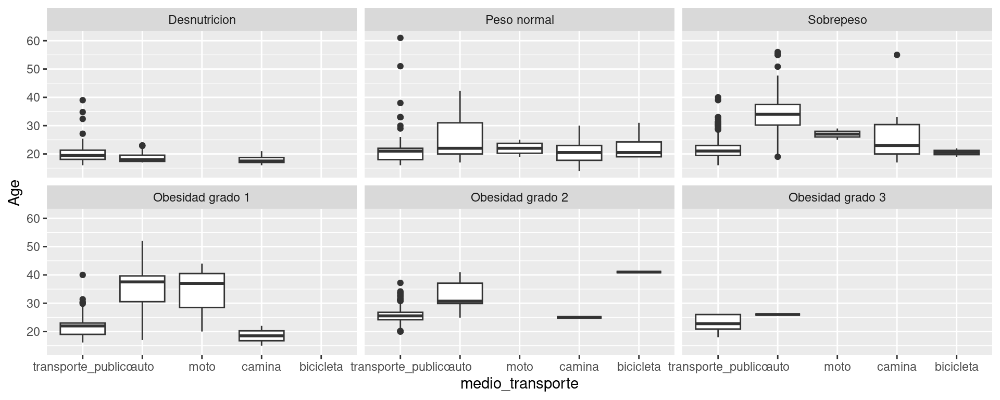
Agrupar la tabla obesidad por medio de transporte y resumir por índice de masa corporal y edad
obesity_transporte <- obesity |>
group_by(medio_transporte) |>
summarise(
med_imc = median(imc, na.rm = TRUE),
avg_imc = mean(imc, na.rm = TRUE),
med_age = median(imc, na.rm = TRUE),
.groups = "keep"
)
knitr::kable(obesity_transporte) # produce:| medio_transporte | med_imc | avg_imc | med_age |
|---|---|---|---|
| transporte_publico | 28.98294 | 30.10971 | 28.98294 |
| auto | 28.98114 | 29.18828 | 28.98114 |
| moto | 24.44444 | 25.76255 | 24.44444 |
| camina | 23.60196 | 23.66216 | 23.60196 |
| bicicleta | 24.21229 | 25.16902 | 24.21229 |
Diagrama de dispersión que relaciona la edad con el índice de masa corporal, coloreado y formado por medio de transporte
ggplot(obesity_transporte, aes(x = med_age, y = med_imc)) +
geom_point(aes(color = medio_transporte, shape = medio_transporte))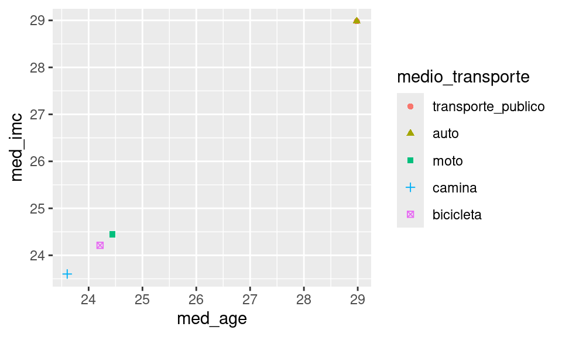